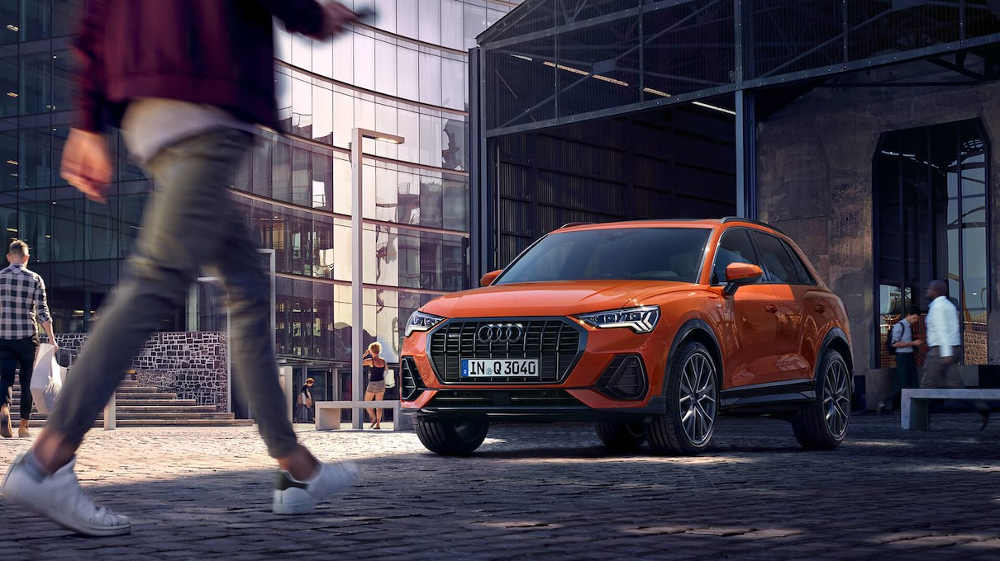
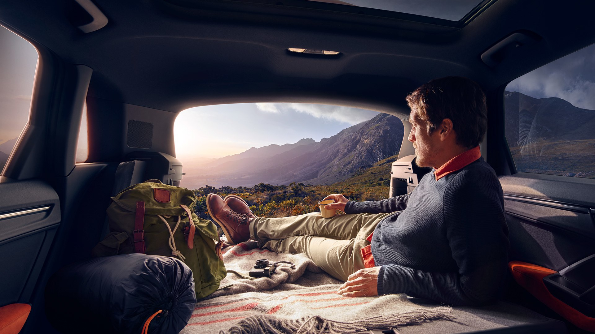

Audi Q3
The Audi Q3 is a real all-rounder. Whether on holiday or in everyday life - it offers plenty of space and provides plenty of variability thanks to many practical details. With increased dimensions and an even more dynamically-designed exterior, it strikes a challenging balance between sportiness and everyday use. The driving experience is also sporty and comfortable at the same time. Thus it masters every challenge, whether in the city, on country lanes or on the motorway.

An Allrounder
The new Audi Q3, which is based on the Volkswagen Group’s modular transverse matrix, has grown in virtually all dimensions and is positioned in the upper compact SUV segment. It is 4,485 millimeters (14.7 ft) long, making it 97 millimeters (3.8 in) longer than its predecessor. In terms of width, it has grown 25 millimeters (1.0 in) to 1,856 millimeters (6.1 ft), but at 1,585 millimeters (5.2 ft) is 5 millimeters (0.2 in) flatter than the first-generation Q3. Its wheelbase, which has been stretched 77 millimeters (3.0 in) to 2,680 millimeters (8.8 ft) is much more spacious – knee room, headroom and elbow room are even larger.
Ready for everyday life
Maneuverable in town, agile on country roads, balanced on the highway – the
suspension on the Audi Q3 offers a wide spread. The sporty character of the
predecessor model has been retained, but enhanced with a clear dose of additional
comfort. The new SUV takes bumpy roads with ease – thanks also to the longer
wheelbase. As an option, the driver can vary the characteristics of the Audi Q3
depending on the driving situation, road conditions or personal needs using the
Audi drive select dynamic handling system. It offers six profiles – from markedly
comfortable, highly efficient through to out-and-out sporty.
The new Audi Q3 looks much sportier than its predecessor. The Singleframe in
octagon design and large side air inlets characterize the masculine front-end.
Eight vertical bars divide up the radiator grille with its striking frame and
reflect the SUV character. The headlights are narrow and run inwards with their
wedge shape. Audi supplies them in three versions, all with LED technology. A
highlight in the side view is the symmetrical lighting graphics of the headlights
and rear lights. The shoulder line connects them from a styling perspective and
provides an athletic overall impression with strong muscles over the wheel arches.
The contours draw their inspiration from Audi’s quattro DNA and make the SUV seem
even wider; the color-contrasting wheel arch trims emphasize the offroad look.
Supported by a long roof edge spoiler, which also flanks the rear window at the
side, the steeply raked D pillars of the body line also create an appearance of
orward thrust.
Lighting technology
The headlights are narrow and run inwards with their wedge shape. Audi supplies them in three versions, all with LED technology. The top-of-the-line version are the Matrix LED headlights whose adaptive high beam intelligently illuminates the road. A highlight in the side view is the symmetrical lighting graphics of the headlights and rear lights.
Intelligently connected
The operating and display concept of the family SUV has been overhauled from the ground up – Audi has done away with the analog instruments. Even with the standard MMI radio there is a digital instrument cluster with a 10.25 inch screen diagonal, which the driver operates using the multifunction steering wheel. With MMI radio plus, the first option level, customers can upgrade the instrument cluster as an option to the Audi virtual cockpit with additional functions. It incorporates, for instance, the MMI functions and, in addition to road and engine speed, also displays information on music tracks and Audi connect services.